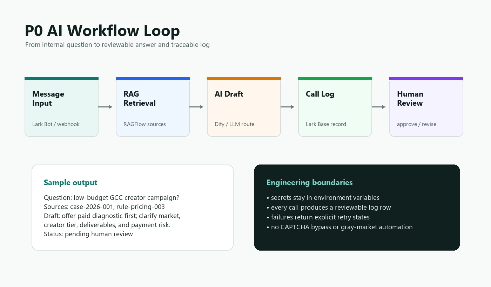

AI workflow integration
LLM API, RAG retrieval, Dify-style orchestration, review states, and traceable call logs.
I help small teams turn repetitive browser, data, and AI review work into reliable systems with logs, retries, handoff docs, and clear human approval steps.

Useful first milestones, not vague transformation decks.
LLM API, RAG retrieval, Dify-style orchestration, review states, and traceable call logs.
Playwright flows, CSV/Excel/PDF cleanup, API ingestion, alerts, and retryable failure paths.
Python/FastAPI adapters, lightweight dashboards, Lark/Feishu integrations, and runbooks.
The demo repository shows a compact P0 loop: message input, RAG retrieval, AI draft, log record, and review card.
Start small, verify quickly, then expand only when the first loop works.
Mock or real P0 workflow, field schema, interface notes, and handoff document.
One input source, one output destination, structured logs, retry path, and operating guide.
Several connected workflows or an internal automation surface with review and monitoring.
Share a redacted screen recording, sample file, API document, or process outline. I will scope the smallest paid milestone that proves the system can work.